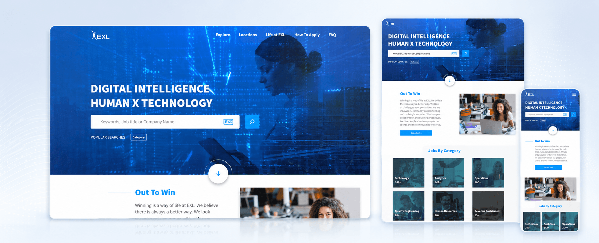
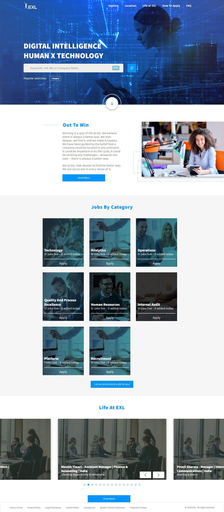
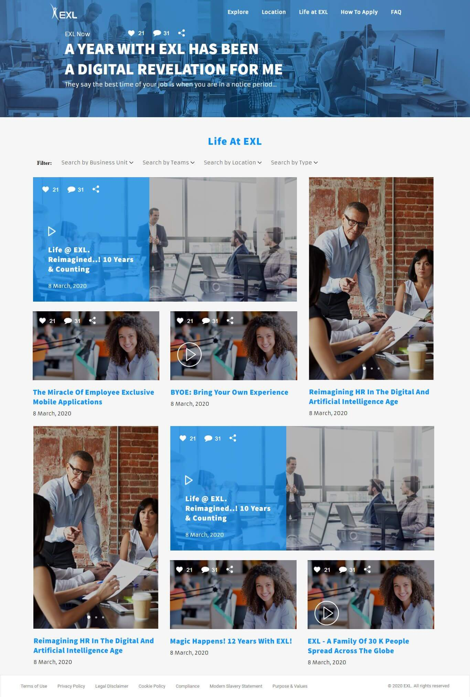

Multiple disciplines, locations and career paths need a simple, useful way into relevant opportunities.
← Back to workFind the role.
EXL · Employer Brand Platform
Find the role.
See the life.

Project overview
From job search.
To employer experience.
Candidates arrive looking for a role. They stay to understand the people, possibilities and culture behind it.
We shaped a responsive careers platform that connects practical job discovery with EXL’s “Out To Win” employer proposition and Life at EXL stories.
- Platform
- Careers Portal
- Core task
- Job Discovery
- Story
- Life at EXL
- Build
- Responsive Web
The organising idea
Utility gets them in.
Culture helps them choose.
The experience gives candidates a direct route into keyword, category and location-led job discovery.
A connected editorial layer then shows what the work can feel like—moving the platform beyond vacancies into employer meaning.
The experience challenge
Make opportunity searchable.
Make the employer memorable.
The experience must communicate culture and ambition without slowing down a candidate ready to apply.
The candidate journey
Search with intent.
Explore with confidence.
- 01
Discover
Begin with keyword, category or location-led job search.
- 02
Navigate
Move through career families and opportunities without losing context.
- 03
Understand
Meet the “Out To Win” proposition through clear employer storytelling.
- 04
Connect
Use Life at EXL content to see the culture behind the role.
The digital experience
One platform.
Two reasons to engage.
A functional careers homepage and an editorial culture experience work as one journey—from finding an opening to understanding the organisation.
Careers homepageSearch, categories, proposition and culture

Life at EXLEditorial stories and employee perspectives

The experience system
Built for action.
Layered with meaning.
Job search
A visible starting point makes opportunity discovery immediate.
Career architecture
Roles and disciplines become clear, recognisable routes through the platform.
Employer story
“Out To Win” gives the experience a distinct point of view beyond listings.
Culture content
Life at EXL turns employee experience into useful proof for candidates.
Responsive by priority
The opportunity stays clear.
On every screen.
Search, navigation and employer content keep their hierarchy as the layout moves from desktop research to mobile job discovery.

The outcome
A careers portal.
With an employer point of view.
The final experience makes jobs easier to discover while giving candidates a stronger sense of the culture, ambition and people they could join.
Clearer discovery
Search and career categories reduce the distance between intent and opportunity.
Stronger context
Employer messaging and culture stories answer more than “what roles are open?”
Connected journey
Utility and storytelling operate as one responsive candidate experience.
Find the work.Understand the world around it.
Building an employer experience?